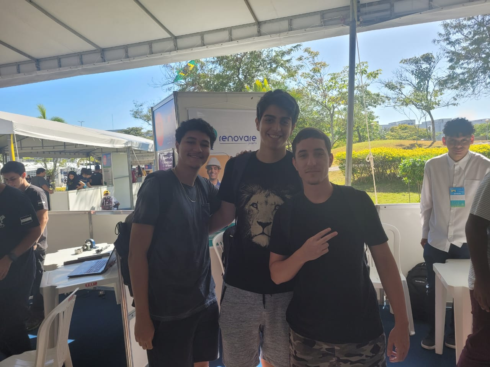
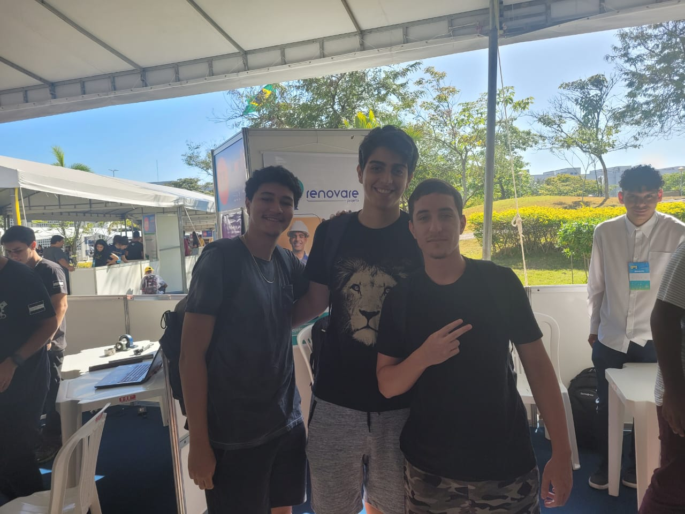

Minha Experiência
Como minha primeira participação na Inova Week, eu achei algo muito interessante. Esta experiência me deu muita noção de como funciona a mesma, quais linhas de pensamentos devemos e ter, e ao analisar diversos grupos se cria ideias de nova inovações e projetos para num futuro em que eu venha a participar da Inova Week.
Percebi que além de criatividade, também é extremamente necessário um grande conhecimento de mundo, para dessa forma ter ideias inovadoras que serão úteis para a sociedade e, assim, fazer com que as pessoa vejam tais ideias como essenciais, e e que tais projetos seram de grande auxílio em suas vidas.
Grupos Destaques
Dos grupos o quais eu vi, dou destaque aos:
-The Study: A ideia é um grupo de estudos, onde será centrado para cada curso, onde os alunos pedom estudar de maneira mais dinâmica a partir de jogos de tavuleiro e de cartas, visando deeixar os estudos menos massantes e tediosos. Também tem como objetivo a aprentação de um curso a uma pessoa que ainda não ingressou na universidade, e assim, ela possa conhecer as matérias do mesmo de uma maneira mais estimulante e divertida.
-Simplesmente Doe: Uma ideia simples, porém muito necessária, onde é basicamente um guia para as pessoa saberem como, onde e quando elas podem doar sangue, todas as exigencias e proibições, o quanto elas podem doar e os benefícios de ser um doador. Assim como também a criação de uma carteirinha de doador, onde terá as informações do doador e será carimbado a cada doação, sendo uma maneira mais simples e fácil de armazenar tais informaç~es e assim ter acesso aos benefícios
-Filpo: Um projeto que é basicamente um filtro portátil feito de material reciclavel. Esse filtro seria baráto e prático, sendo feito para pessoas os quais vão ou morão em locais onde não se chega água tratada, sendo assim, uma maneira rápida e prática de tais pessoas conseguiram água potável.
Fotos
 
